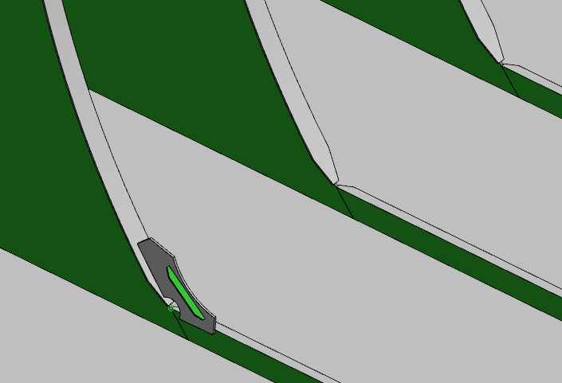
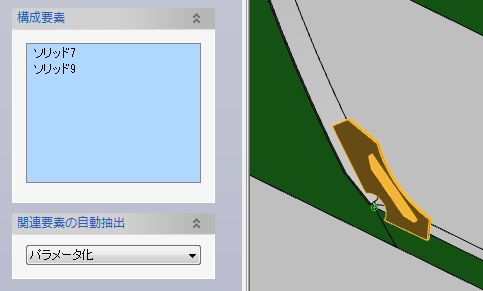
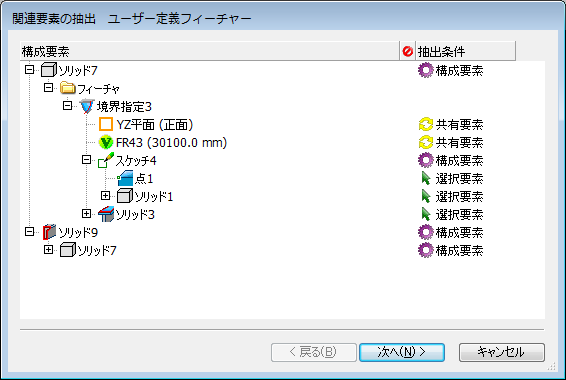
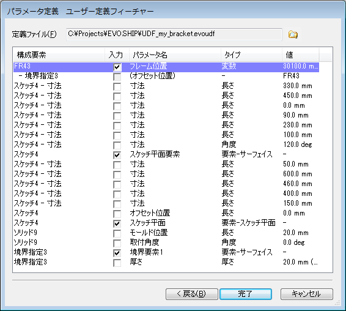
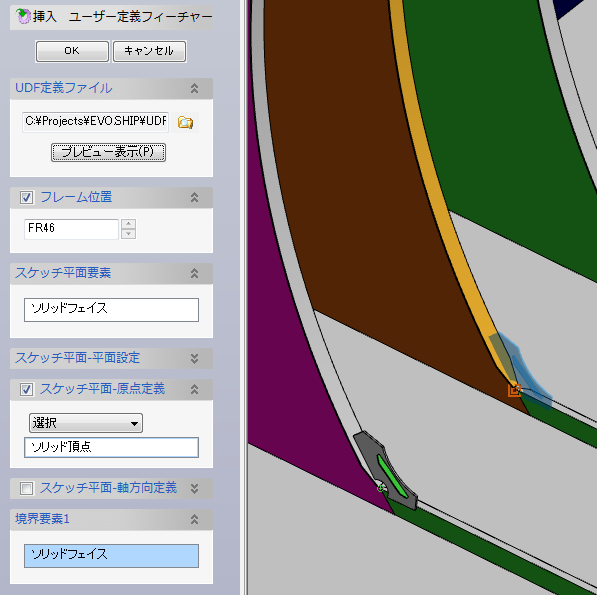

スケッチで作成したプロファイルを使って、独自のブラケット形状を作成します。
この例の場合、境界指定フィーチャーコマンドと条材コマンドを使用しています。

スケッチの原点位置を絶対座標ではなく明示的に指定することにより、ユーザー定義フィーチャーが作成しやすくなります。
新規-ユーザー定義フィーチャーで作成します。
作成した形状を構成要素として選択します。
関連要素の自動抽出は「パラメータ化」とし、OKボタンでウィザードダイアログを表示します。

境界となる要素（関連要素のうち構成要素として選択されていないもの）は全て選択要素となっています。

特に変更する必要なないので、「次へ」でパラメータ定義へ移動します。
定義ファイルを設定します。
可変パラメータをチェックして名称を設定します。
パラメータ化される要素（選択要素）の入力は必ずチェックされますので、分かりやすい名称をつけます。
また、フレーム位置も変更したいので、変数の入力をチェックして、パラメータ名を入力します。

「完了」ボタンで定義ファイルを作成します。
スケッチ寸法を可変パラメータにすると、挿入時に寸法値を変えることができます。
モデルにデッキを挿入-ユーザー定義フィーチャーで作成します。
先に作成した定義ファイルを選択します。
フレーム位置の変数を変更し、パラメータ化された要素を選択します。
その後、OKボタンでユーザー定義フィーチャーが作成されます。

パラメータ化してユーザー定義フィーチャーを作成すると、同一ドキュメントだけでなく、別のドキュメントへも挿入できるようになります。